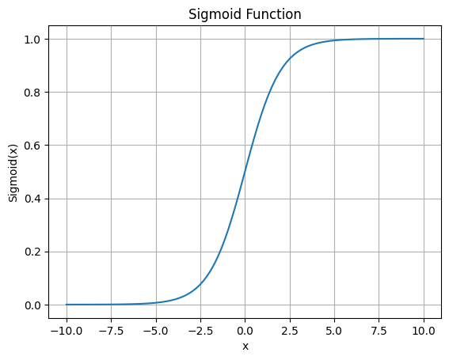

Table of Contents
sigmoid函数实现#
import numpy as np
import matplotlib.pyplot as plt
%matplotlib inline
def sigmoid(x):
"""sigmoid函数"""
return 1 / (1 + np.exp(-x))
x = np.linspace(-10, 10, 100)
y = sigmoid(x)
plt.plot(x, y)
plt.title('Sigmoid Function')
plt.xlabel('x')
plt.ylabel('Sigmoid(x)')
plt.grid(True)
plt.show()
